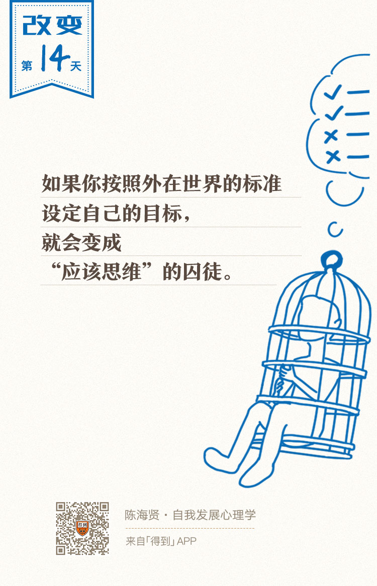

14丨对自己的应该思维：为什么我无法接纳自己的情绪？

欢迎来到《自我发展心理学》。
你好，我是陈海贤。
上节课我们提到，应该思维分为两种：一种是对世界和他人的应该思维，另一种是对自我的应该思维。
今天我们就来讲第二种——对自我的应该思维。
简单来说，应该思维是对自我的“暴政”，让我们在压迫中找不到自我。听完这一讲，你就会知道我为什么这么说了。
自我烦恼的背后是应该思维
有时候我会去参加一些活动，现场回答一些问题。经常有提问者说，我回答问题的思路比较奇特。
比如一个男生跟我说：“我有一个很重要的目标，不得不为此做一些自己也不那么愿意的事情，比如准备一个很重要的考试。可是我的身体好像不听使唤，经常拖延，我怎么才能让自己有持续的动力去做这件事呢？”
我赶紧摇头说：“我可不能帮你出这个主意。你现在这样问我，好像是你身体里有两个自我，一个是压迫的自我，一个是无奈的自我，前面的一个在逼着后面的一个做他不喜欢的事情。
无奈的自我呢，除了偶尔通过拖延表达一下不满和反抗，没别的发言权。现在你想让我帮压迫的自我，来让无奈的自我彻底闭嘴。我可不能这么做，通常我都是站在弱者这边的。”
我这么回答他，倒也不是为了耍嘴皮子。我发现，几乎所有关于自我的烦恼背后，都有一个“应该自我”存在。
这个男生问题背后的“应该自我”是什么呢？就是“我应该全力以赴心无旁骛，哪怕这不是我愿意做的事情。”
当他发现，现实的自我和这个应该的自我有差距时，他就会想“这是不是我有问题”。
如果我以正统的方式回答他的问题，跟他说说自我管理的办法，那我就认同了他问题背后，那个“应该自我”的假设。我其实也就认同了“对，你就是有问题，这个问题就是你想的那样。”
可是真是这样吗？为什么那个“应该自我”就是合理的呢？
我就是想通过一些奇怪的回答，来动摇他头脑中“应该如此”的信念。我想告诉他：
我和我的来访者也会讨论他们心里的自我应该，有时候他们会问我：“老师，难道我不该对自己的人生提出更高的要求吗？”
我这时候会告诉他们：我们当然需要追求一个更好的自己，但我们要搞清的是，这个更好的标准来自哪里。它来自你的内心，还是来自外在的设定？
曾有一个朋友写信跟我说，他现在28岁，忽然醒悟了，觉得自己应该要努力了。
所以他现在每天睡6个小时，没有周六周日，努力学习一些东西。每次学习的时候都很开心，可是每当效率变低的时候，他就会觉得沮丧，觉得自己不如这样奋斗着猝死算了。
可是又有时候，他觉得自己这种放弃的心态真是太弱了，觉得人家创业的比他辛苦太多，自己奋斗的日子还长着呢。
该怎么理解这种心态呢？你可以看到，这种心态里，有一种自我强迫的存在，就来自“我应该要努力”的应该思维。
我们来想想，自然的努力是怎么样的。
也许你也会看到身边那些真正努力的人，他们心里有一个想实现的目标，但其实他们并不那么关心自己努力不努力这件事。
他们会把所有的注意力都放到事情上，他们只想把事情做成。这时候，努力是一种自主自发的状态，是创造活动所产生的副产品。
可是，当一个人觉得自己“应该要努力”的时候会怎么样呢？
他会想，“虽然我也不知道自己要做什么，可是既然那些成功的人都很努力，头悬梁锥刺股这件事我也会啊。”于是他开始遵照内心应该的规则行事。
他读书、听讲座、学习。可是他心里并没有特别想做成的事情。只想要努力这种状态本身，因为“努力总是对的”。
应该思维的本质是模仿
想一想，生活中有多少人在跟你灌输“应该如此”的信条呢？
- 电视上的偶像剧在告诉你，该怎么谈恋爱；
- 精明的商家在告诉你，该怎么给情侣送什么礼物；
- 结婚的时候要拍什么样的婚纱照；
- 有个水果贩子在一个平安夜发明了平安夜要吃苹果，于是，平安夜送苹果就变成了一种标配。
我们的心里有太多的“应该”在告诉我们怎么做，这些应该思维变成了我们对自己情感的限制，并最终取代了我们真实的情感表达。这就是自我应该思维的最大问题。
听到这儿，也许你已经明白了。“我应该如此”的应该思维，它的本质，是用社会规则、他人的期待或者文化习俗，代替了我们自发的行动。
应该思维完整的语句也许是：既然别人觉得那样做是对的，那我就应该那样做。既然别人期待我这样，那我就应该像别人期待的这样做。
也许你还会有点困惑：刚刚所有故事里的主人公，他们想努力、想改变，看起来也是自主自愿的，没有人强迫他们，这难道不是自发的行动吗？
其实，这不是自发的行动，而是对自发的一种模仿。
我们还接着上面那个要努力的年轻人来说。
他告诉我，到后来，他感到自己开始懈怠了，为了鼓舞自己继续努力，就买了很多书，但很少去翻；还办了健身卡，但从来不去锻炼；做过很多计划，但从来没有认真执行。
你有没有觉得，有时他更像在表演一场叫做“努力”的行为艺术呢？
是的，他并不真的想要继续努力，而是希望通过摆出努力的Pose，来满足他心里我“应该要努力”的想法。
从真正的努力，到追求努力的状态，到追求努力的感觉，努力逐渐变成了对努力的模仿。这就是应该思维胁迫下的自我和自然状态下的自我的区别。
应该思维导致非黑即白
你现在或许能理解为什么我说应该思维是对自我的“暴政”了。因为，应该思维会妨碍我们真实的情感表达，让我们的行为偏离事情本身，变成一种模仿。
其实，应该思维的影响远不止于此。应该思维不仅会影响我们的情感和行为，更会影响我们的思维，造成思维上的非黑即白。
我曾有一个来访者，她自觉自己是一个善良的人，这是她的理想的“应该自我”。
有一天，她经过学校门口，看到学校门口有一个乞丐。这个乞丐伸手向她要钱，她犹豫了一下，没有给。
本来这是一件小事，可是她就非常内疚，一直在想，“我是不是不够善良了”。她的内疚背后，就有“我应该善良”的应该思维，而跟这个应该思维紧密相连的，是“如果我不给乞丐钱，我就不善良了”这样的非黑即白的思维。
如果我失恋了，我就没人爱；
如果老板批评了我，我就没有能力；
如果他没帮我，他就是一个坏人。
很多我们的烦恼背后，都是应该思维所导致的非黑即白。
为什么应该思维会导致非黑即白呢？如果我们遵循的是我们的感觉，它常常是非常复杂的，也是自然流动的，有很多的灰色地带。
有时候我们会对路边的乞丐有善心，有时候我们会熟视无睹甚至有些厌弃，这都是我们真实的感受。
但是，如果我们依据“应该规则”来做判断，那就会不一样了。“应该的规则”只有符合不符合，遵守不遵守。
我要么是一个善良的人，要么不是一个善良的人。我要么努力，要么不努力。因为规则天生就是非黑即白的。
一旦我们用理想化的规则来限定我们自己，判定我们自己，我们的思维变得僵固了，我们就很难容忍自己感受中和规则不同的部分。我们会扭曲自己的情感，以让它符合“应该”的要求。
所以，应该思维不仅妨碍了我们真实的情感表达，还固化了我们的思维。
现在，我们知道了应该思维的本质，以及应该思维带给我们的危害，那么你有没有思考过，我们为什么会陷入应该思维呢？为什么会越陷越深，甚至让这种“应该”变成我们理所当然的思维方式呢？
在这里，我想给你介绍心理学家霍尼（Karen Horney）的理论。她说：
这个理想的自我通常都是完美的，聪明、美丽、优秀、毫无瑕疵。当我们用幻想的自我来对照现实的自我时，会觉得自己像个冒牌货。所以，我们会努力维持幻想中的形象，害怕别人看到幻想背后真实的自己。
这些理想的自我，并不是来自于我们真实的自我经验，而是由很多“我应该很努力”、“我应该谈恋爱”这类的规则堆起来的。
为了保护这个幻想中的理想自我，他们会变得非常死板，会排斥自己内心里跟这个“应该自我”不同的情绪和感受。
这样一来，他们就被这些“应该的规则”支配了，成为了“应该规则”下的提线木偶。
那么，我们该如何跳出应该思维，逃脱这个暴政呢？
这个说起来并不复杂，就是找回我们的感觉。毕竟，感觉虽然模糊，但是它才是我们真实的东西。
当然，在真实的世界中做到这一点也不容易，需要我们掌握新的思维工具。别着急，在这一章课程的后半部分，我会把这些思维工具教给你。
总结一下，我们今天讲了对自我的应该思维。我们首先思考了应该思维的本质。应该思维其实就是用别人的标准来代替自发行动的思维方式。
之后，我们思考了为什么应该思维是一种“暴政”。因为它既会阻碍我们真实情感的表达，让我们的行为变成一种模仿，又会固化我们的思维，造成我们思维上的非黑即白。
当我们按照外在世界的标准设定人生目标时，很容易就变成应该思维牢笼中的囚徒，不再能看见世界的灰度，也不再拥有思维的弹性。
到此为止，我们讲了两种防御思维：僵固思维和应该思维。
下节课我们来讲第三种，也是最后一种防御思维——绝对化思维。
我们下节课见。
